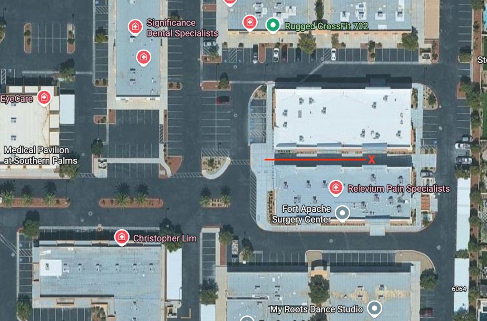
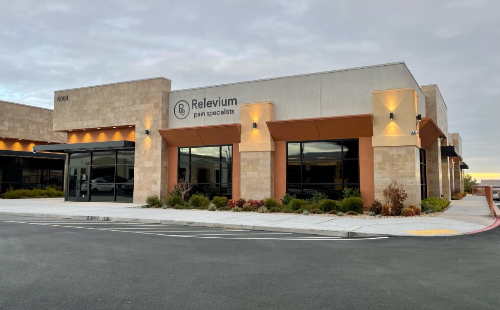

Reach us
Phone
702.940.8050
Fax
702.940.8044
Visit
Suite 110, in the same building as Relevium Pain Specialists.
Phone
702.940.8050
Fax
702.940.8044
| Tuesday – Friday | 7:00 AM – 3:00 PM |
|---|---|
| Saturday – Monday | Closed |
6064 S Fort Apache Rd.
Suite 110
Las Vegas, NV 89148
Park in the lot at 6064. Follow the marked path on the map below to the entrance we share with Relevium Pain Specialists.
Find us
The red path on the satellite map leads to our entrance, marked with an X, in the same building as Relevium Pain Specialists.

